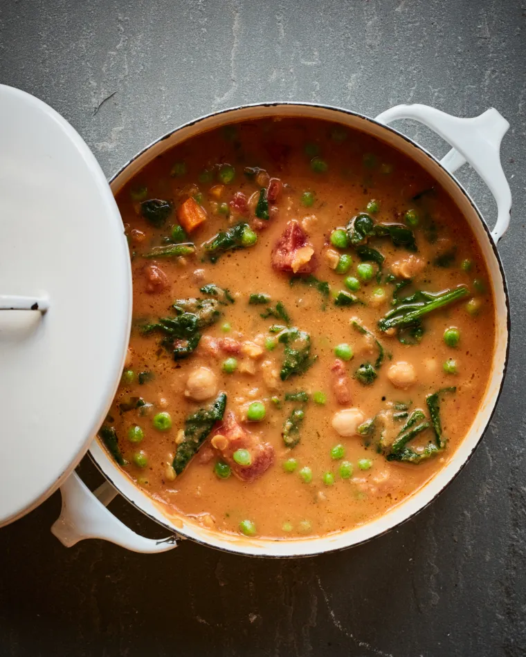

Smoky Chickpea, Red Lentil & Vegetable Soup
A warming, satisfying lentil and vegetable soup to cure your winter blues.

- Servings: 6
- Total Time: 30 Minutes
Ingredients
- 2 tablespoons olive oil
- 1 medium yellow onion, finely chopped
- 4 garlic cloves, minced
- 1 large carrot, diced
- Heaping 1/4 teaspoon smoked paprika
- 3/4 teaspoon cumin
- 4 cups low-sodium vegetable or chicken broth
- 1 (14.5-ounce) can diced tomatoes
- 1/3 cup red lentils
- 1/2 teaspoon dried thyme
- 2 bay leaves
- 1 teaspoon salt
- 1/4 teaspoon ground black pepper
- 1 (14.5-ounce) can chickpeas, drained and rinsed
- 1 cup cooked vegetables, such as frozen peas or chopped green beans
Instructions
- In a large pot, heat the olive oil over medium heat. Add the onions and cook, stirring occasionally, until soft, about 5 minutes. Add the garlic, carrots, smoked paprika and cumin; cook, stirring frequently so the garlic doesn't brown, about 2 minutes more.
- Add the broth, diced tomatoes, red lentils, thyme, bay leaves, salt, pepper and bring to a boil. Cover the pot and reduce the heat to a simmer; cook for ten minutes. Add the chickpeas, cover the pot and cook 10 minutes more. Fish out the bay leaves, then transfer 2 cups of the soup to a blender and purée until smooth. Add the puréed soup back to the pot and stir. Taste and adjust seasoning if necessary (I usually add a good bit more salt); if you want the soup to be thicker, purée a bit more soup. Add the cooked vegetables, frozen peas or chopped greens and simmer until the soup is hot and the vegetables are warmed through. Ladle the soup into bowls and serve.
- Freezer-Friendly Instructions: The soup can be frozen for up to 3 months. Defrost the soup in the refrigerator for 12 hours and then reheat it on the stovetop over medium heat until hot. through.